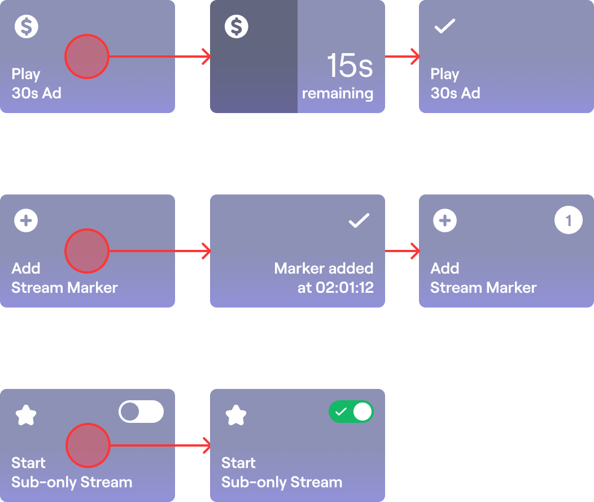

"Less interface. More creator success."
The Dashboard is the command center for Twitch creators but it was becoming a cockpit of buttons, tabs, and metrics that too often distracted from the real task: going live and connecting with your audience.
When I joined the project, only 34% of users who showed streaming intent actually streamed within 90 days. Of those, just 3% became part-time or full-time streamers. That’s not a design problem that’s a focus problem.
So we asked:
What could we do to help creators focus on what they love doing?
The primary customer is the creator. Specifically, new and small creators that are looking to understand all of the different elements that go into successfully streaming on Twitch.
The secondary customer is existing and established creators that have a grasp on the current complexity of successfully streaming on Twitch but need help understanding and interacting with new features and functionality that Twitch develops.
Replace dashboards with decisions.
Don’t make users hunt. Bring actions forward when they matter.
New creators shouldn’t see the same controls as pros on day one.
Before final implementation, we tested an interactive prototype with a mix of new and experienced streamers. Participants were given common streaming tasks to complete without guidance.
Our goal: validate clarity, discoverability, and ease-of-use across the redesigned layout.
Users completed all key tasks with minimal friction. Key themes emerged:
| Task | User 1 | User 2 | User 3 | User 4 | User 5 | User 6 |
|---|---|---|---|---|---|---|
| Update Stream Title | PASS | PASS | PASS | PASS | PASS | PASS |
| Post to Twitter or Facebook | PASS | PASS | PASS | PASS | PASS | PASS |
| Remove Raid Channel | PASS | PASS | PASS | PASS | PASS | FAIL |
| Add Squad Stream | PASS | PASS | PASS | PASS | PASS | PASS |
| See Viewers & Followers | PASS | PASS | PASS | PASS | PASS | PASS |
| Add Subscriber Stat | PASS | PASS | PASS | PASS | PASS | PASS |
Takeaway: The new layout helped users feel confident, in control, and focused without needing instructions.
| Problem | Solution |
|---|---|
| Overwhelming interface for new users | A guided "happy path" with smart defaults |
| Feature overload | Progressive disclosure—show actions only when relevant |
| Too many clicks to do basic things | One click quick actions, customizable layout |
| Confusing real time updates | Streamlined live session panel: preview, chat, followers, bitrate in one glance |
| Inconsistent discoverability | Contextual suggestions based on lifecycle stage |
We built a data backed blueprint for success:
Creators could still customize but they weren’t starting from zero.
We minimized clutter by showing only what matters right now:
Quick Actions were redesigned as modular, editable tiles, visually clear, color-coded, and flexible.
“…the Quick Action colors contrast so well against the dark background and are visually appealing.” – User tester
We cleaned up the Activity Feed and brought it closer to the core streaming tools (chat, preview, and stream health), minimizing context switching.
“This tool offers you anything you would need to monitor, edit, or change your stream.” – Participant feedback
The mobile version prioritized:
This way, a mobile stream didn’t feel like a stripped down experience; it felt intentional.
| Metric | Before | After |
|---|---|---|
| Stream success (within 90 days) | 34% | ↑ 50% projected in beta |
| Avg. time to “Go Live” | ~3 mins | ↓ 1.2 mins |
| Task success in user tests | 75% | 95% (6/6 passed all) |
| Action click reduction | — | ↓ 40% |
| Positive feedback on intuitiveness | — | “Super easy to use and manage” (multiple users) |
The Stream Manager redesign wasn’t about packing in more controls. It was about getting out of the way.
By designing around actions, not apps, and guidance, not GUIs, we helped creators succeed faster, with fewer buttons, fewer doubts, and more joy.